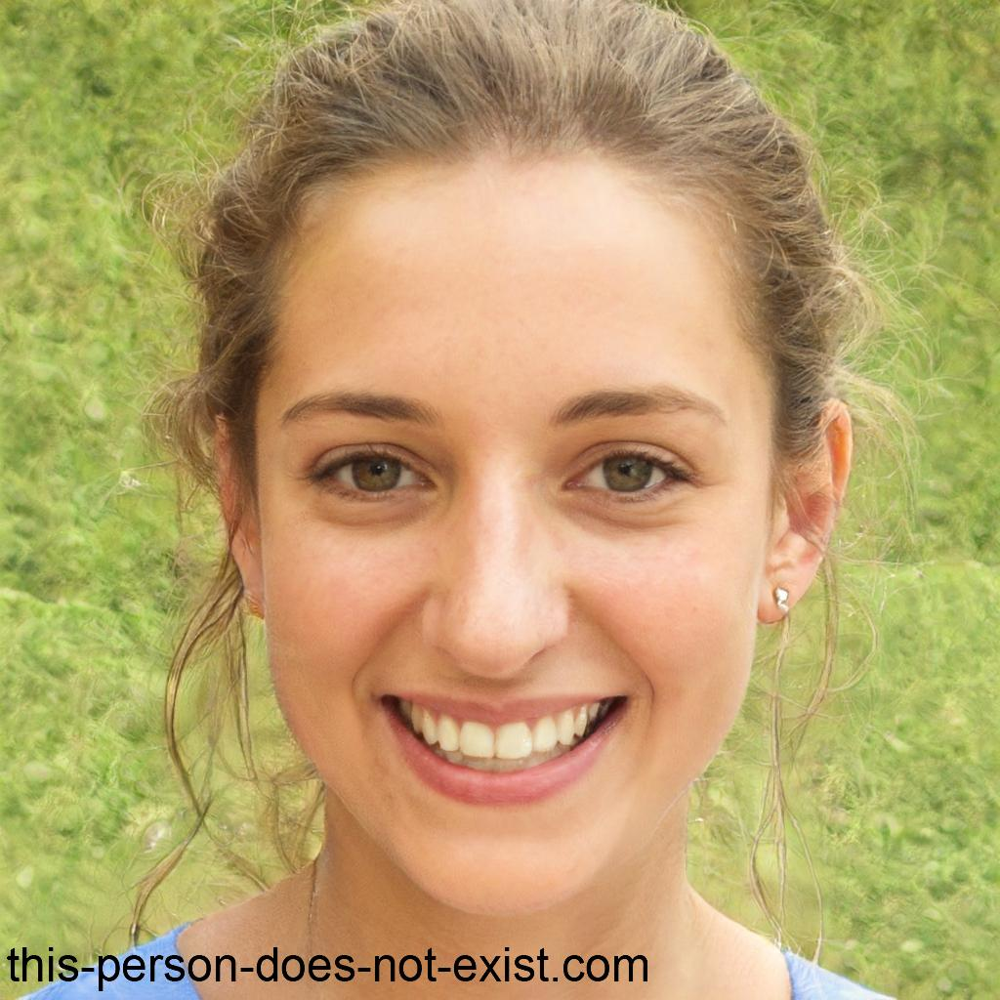
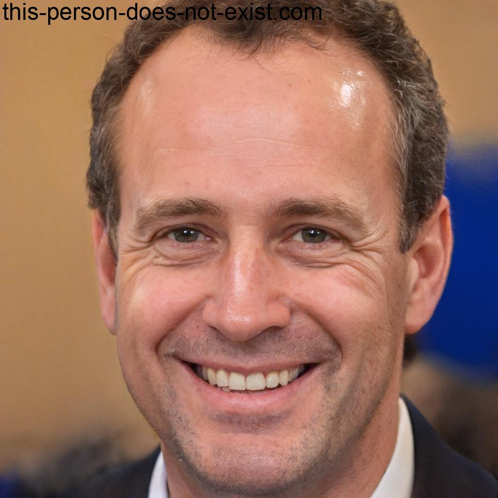
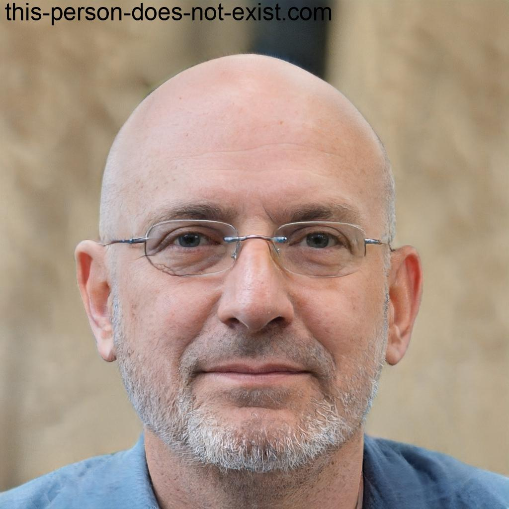

Sobre nós
Elizabeth Hargrave
 Con máis de duas décadas de experiencia, é unha apaixoada das ciencias aplicadas. Obtuvo o seu doutoramento en Física Cuántica e liderou numerosos proxectos de investigación. O seu enfoque práctico e a súa habilidade para facer comprensibles os conceptos complexos fan dela unha profesora excepcional. Fóra do aula, gústalle a fotografía e a astronomía.
Fabio Lopiano
O profesor Fabio Lopiano é un educador carismático e un amante das artes escénicas. Cunha maestría en Literatura e Teatro, dirixiu diversas producións teatrais e inspirou aos seus estudantes a explorar a maxia da palabra escrita. A súa creatividade e enfoque interactivo fan que as súas clases sexan inesquecibles. No seu tempo libre, disfruta da escrita creativa e da música indie.
Germán Millán

O profesor Germán Millán é un lingüista apaixoado cun enfoque único na ensinanza de idiomas e culturas. Cun doutoramento en Lingüística Comparada, viaxou por todo o mundo estudando e ensinando diferentes idiomas. O seu estilo inclusivo e respectuoso fomenta un ambiente de aprendizaxe acolledor. Ademais das súas habilidades políglotas, é un entusiasta da cociña internacional.
Uwe Rosenberg

O profesor Uwe Rosenberg é un pioneiro na integración da tecnoloxía na educación. Cunha sólida formación en Enxeñaría de Sistemas, desenvolveu programas educativos interactivos que transformaron a experiencia de aprendizaxe. O seu dinamismo e entusiasmo pola tecnoloxía inspiran aos estudantes a explorar novas fronteiras. No seu tempo libre, disfruta da programación creativa e dos viaxes tecnolóxicos.
Martin Wallace
O profesor Uwe Rosenberg é un pioneiro na integración da tecnoloxía na educación. Cunha sólida formación en Enxeñaría de Sistemas, desenvolveu programas educativos interactivos que transformaron a experiencia de aprendizaxe. O seu dinamismo e entusiasmo pola tecnoloxía inspiran aos estudantes a explorar novas fronteiras. No seu tempo libre, disfruta da programación creativa e dos viaxes tecnolóxicos.
Inka Brand
O profesor Uwe Rosenberg é un pioneiro na integración da tecnoloxía na educación. Cunha sólida formación en Enxeñaría de Sistemas, desenvolveu programas educativos interactivos que transformaron a experiencia de aprendizaxe. O seu dinamismo e entusiasmo pola tecnoloxía inspiran aos estudantes a explorar novas fronteiras. No seu tempo libre, disfruta da programación creativa e dos viaxes tecnolóxicos.